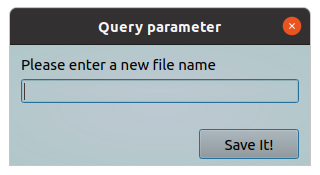
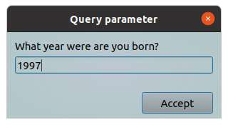
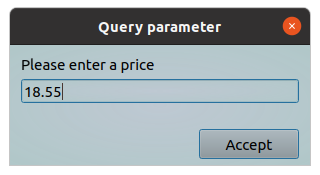
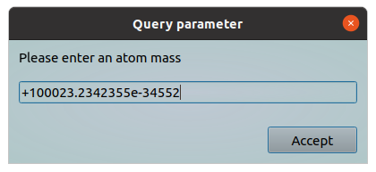
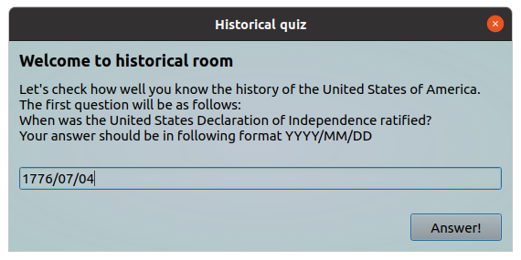
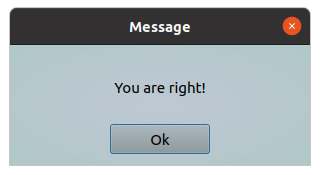

This tool allow you to request a different parameters in string format.
It can be strings, numbers, dates in specified format.
You can specify a special mask to reject inconsistent data, and you can specify a data type.
Also you can specify a message text to clarify you request for user.
The inputed parameter will returned back to requesting program.
All parameters should be provided via command line.
Options:
| Short | Long | Description |
|---|---|---|
| -h | --help | Will show help and exit |
| -m | --message "Clarifying text" | A text message, it should clarify you request. You can use HTML markups for better view |
| -t | --dtitle "New dialog title" | A text string which will show in dialog header |
| -c | --data-type "Data type" | A type of requesting data. It can be: "string", "integer", "float", "double" or "date" |
| -d | --data-mask "Regular expression"" | A filter mask in regexp format which will used during data validation |
| -b | --btntext "New btn label" | This text will show onto "Accept" button, i.e. you can rename this button |
| -x | --sizex window_width | This parameter allow you to customize window width (default 300 pixels, minimum 300) |
| -y | --sizey window_height | This parameter allow you to customize window height (default 120 pixels, minimum 120) |
Examples:
Query file name
#!/bin/bash
# some actions here
file_name=$(ytools-query-parameter --message "Please enter a new file name" --data-type "string" --btntext "Save It!")
echo "You printed the following file name: " ${file_name}
As a result following window will appear:

Query a year
Only four digits are acceptable. First digit in input should be 1 or 2.
#!/bin/bash
# some actions here
the_year=$(ytools-query-parameter -m "What year were are you born?" --data-type "integer" --data-mask "^[1,2]{1}[0-9]{3}$")
echo "You printed the following year: " ${the_year}
As a result following window will appear:

Query a price
Only float numbers are acceptable.
#!/bin/bash
# some actions here
price=$(ytools-query-parameter -m "Please enter a price" --data-type "float" )
echo "You printed the following price: " ${price}
# operations with price
As a result following window will appear:

Query a double numbers
You can enter a float numbers with double precision. Exponential form are supported.
#!/bin/bash
# some actions here
atom_mass=$(ytools-query-parameter -m "Please enter an atom mass" --data-type "double" )
echo "You printed the following: " ${atom_mass}
# operations with atom_mass
As a result following window will appear:

Advanced using
In this example we will create a step of simple quiz. We will ask the user a question, assuming that he must answer with a date. We are using HTML markup language to improve out text request. Also we changing window size, dialog title and "Accept" button text for better view.
#!/bin/bash
# some actions here
answer=$(ytools-query-parameter -x 550 -y 230 --dtitle "Historical quiz" --message "<h3>Welcome to historical room</h3>Let's check how well you know the history of the United States of America.<br>The first question will be as follows:<br>When was the United States Declaration of Independence ratified?<br>Your answer should be in following format YYYY/MM/DD" --data-type "date" --btntext "Answer!" )
if [ "${answer}" == "1776/07/04" ]; then
$(ytools-show-message --message "You are right!")
else
$(ytools-show-message --message "Sorry, but you are mistaken :(")
fi
# Next quiz step
As a result following windows will appear:
|  |  |
Show help
This command will show a help message.
ytools-query-parameter --help
As a result following information will shown:
*** query-parameter - a simple program which allow you to request a different parameters in string format. *** Requested parameter can be string, number or date in specified format. You can specify a special mask to reject inconsistent data, and you can specify a data type. Also you can specify a message text to clarify you request for user. The inputed parameter will returned back to requesting program. Usage: ./query-parameter [options] -h, --help Display this help and exit. -m, --message "Clarifying text" Text string which will show in dialog (default "Please enter a parameter value"). Please use it for clarifying you request. You can use HTML markup language for better view. -t, --dtitle "New dialog title" This text will show in dialog header (default "Query parameter"). -c, --data-type "type" A type of requesting data. It can be: "string", "integer", "float", "double" or "date" (default "string"). -d, --data-mask "Regular expression" A filter mask in regexp format which will used during data validation (default empty). -b, --btntext "New btn label" Accept button will labeled with this text (default "Accept"). -x, --sizex window_width This parameter allow you to customize window width (default 300 pixels, minimum 300). -y, --sizey window_height This parameter allow you to customize window height (default 120 pixels, minimum 120).